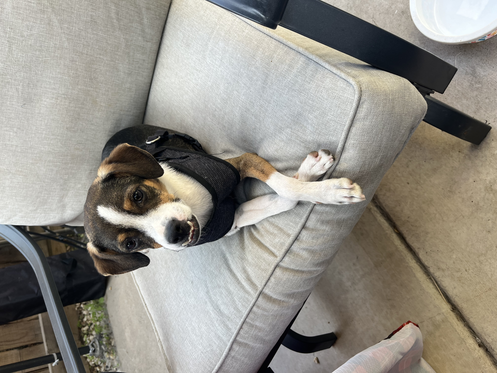
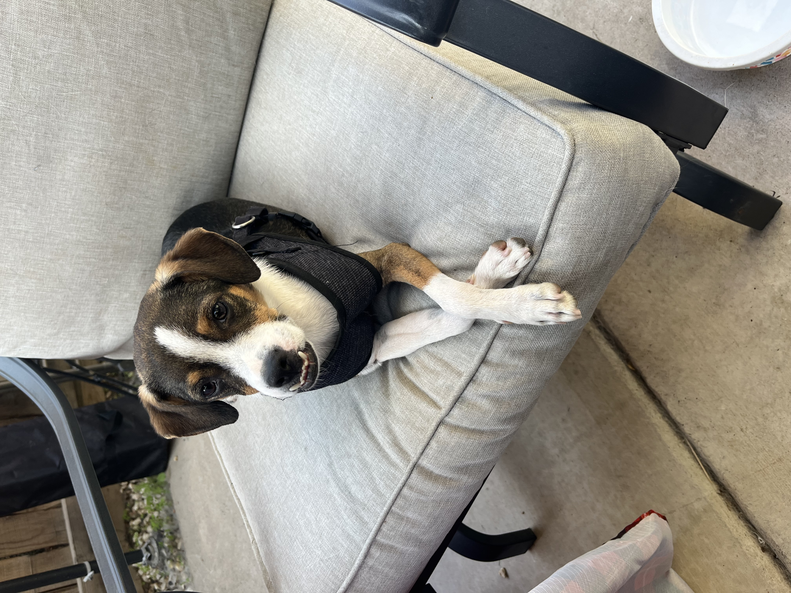

Who is Kayla Moton?

Who is Kayla Moton?Kayla Moton is a bubbly, creative spirit from Tuscaloosa, AL, raised in Georgia. But most importantly, She is a family girl. She would say that her entire family raised her. Her family taught her the things school did not, but they also instilled in her the importance of education. Especially her grandfather who paved the way for her to receive her college education. Without him, she is not sure how long it would have taken her to complete this journey. She is forever grateful for him and everything he shared with her... Kayla Moton is a firm believer of the phrase, "Knowledge is power." There is always something to learn being that knowledge is also endless.
Post early education, In 2018, I graduated from Lassiter High school in Marietta, Georgia. For college, I initially started as a freshman at the University of West Georgia then transferred to KSU (Kennesaw State University) in 2020 as a Psych major. While in school, I got a position as an Optometric Tech just to gain experience in a clinical setting. Not too long after, I realized that the field of psychology was not for me. After losing my grandfather in 2021, I took some time off of school to learn more about myself and what career field was a better fit for me. I spent a year in Sacramento, California with my dad, exploring a new environment, making new friends, and working in Ophthalmology. I realized that I was growing my experience in a field I did not want a longterm career in.
I did however find interest in the technical side of the field; seeing how the websites/patient portals were made, thinking what I could do to create a more effiecient system for better clinical flow. After doing more research on web deisgn/UX design, Graphic design,etc. I made the decision to move back home, and enter the Interactive Design program at KSU. I am currently in my third year, learning new skills, and looking forward to growing in the field. Some hobbies I enjoy are painting, reading the Holy Bible, creating lifestyle content, traveling, and spending time with my dog, boyfriend, and family. In the next 3 years I would love to be happily married with one child, have been in my third year in digital design, and involved more deeply in serving my community!